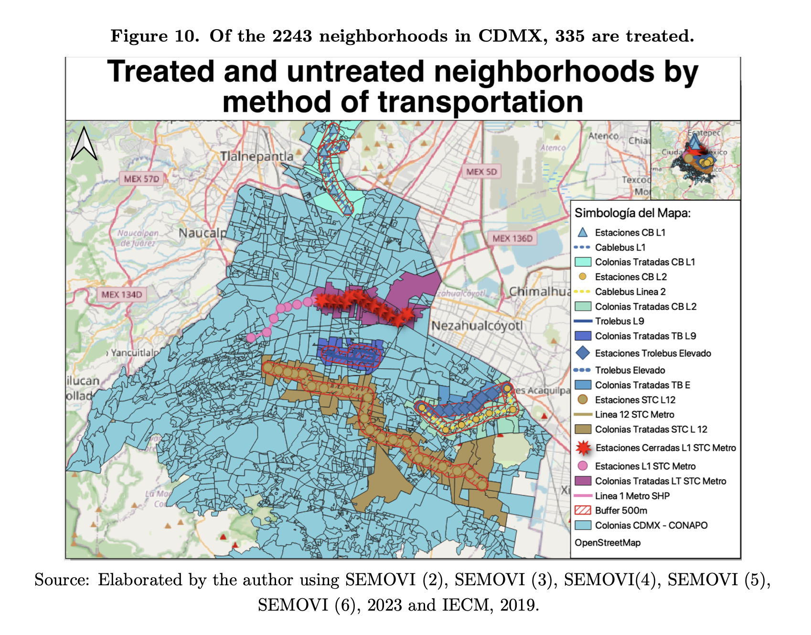

Director of Analytics
Mexico City DA, 2025-2026
Led data strategy for the city’s criminal policy and built new data pipelines and application systems.
Economist with 4+ years of experience across the public and private sectors, using data analysis and strategy to understand and improve economic and financial systems. Currently pursuing an MPA in International Finance and Economic Policy Management at Columbia SIPA in New York. I’m interested in roles that combine rigorous analysis, strategic thinking, and clear communication of the findings.
This is a short selection of my work showcasing primarily visualizations and analytics.
Showcase of some insights data revealed on Mexico City's Public transit.
Topics ranging from electoral to gas prices.
Between 2018 and 2024 Mexico City experienced a surge of public investment in much-needed public transportation infrastructure. In 2018, the newly elected government pushed to diversify the network by investing in new bus lines, cable cars and trolleys, primarily located in historically marginalized neighborhoods; it also engaged in costly closings of the subway lines because of maintenance. Measuring the impact of public transit infrastructure is complex. Usually, it is not possible to isolate its effect on a single variable; most of the literature points to the effect in terms of a reduction of commute times and self-reported well-being, but causal inference on other variables is hardly tested. The opening and closing of public transit lines constitute a unique setting to assess the impact of public transit on other variables. We use a Difference-inDifference design to measure the impact on the affected treated neighborhoods on reported road incidents. We find robust evidence that subway line closures increase road incidents by 20%. These results remain consistent when using a matching design to reduce heterogeneity in the control group. Both line closures and openings show statistically significant effects, with openings reducing total road incidents by 15% and closures increasing them by 11%. This work adds to the existing literature on public transit externalities.

Read the paper on SSRNMade for absolute beguinners, goes over key software aspects.
Amateur project of CDMX street photography.
Economist and data analyst based in New York, pursuing an MPA at Columbia SIPA. I connect data analysis, visualization, and strategy to understand how economic and financial systems work and how to improve them. I’m interested in roles where that thinking is applied to markets, infrastructure, and public-interest questions, and where the findings need to be communicated clearly.
Mexico City DA, 2025-2026
Led data strategy for the city’s criminal policy and built new data pipelines and application systems.
Digital Agency for Digital Transformation and Telecom, 2024-2025
Established the president’s data consultancy office, advising on issues from tax collection estimates to water supply.
Banorte, 2023-2024
Provided data analysis for the Strategy and Product division of Mexico’s second-largest bank.
Digital Agency for Public Innovation, 2021-2022
Delivered data analysis for public-sector consulting projects.